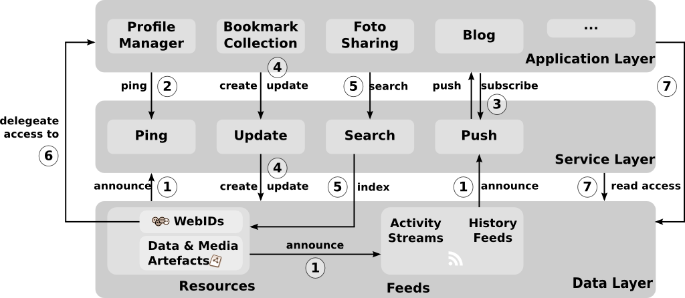

Agile Knowledge & Semantic Web Research Group
Header graphic, containing LSoM logo and title of the currently show slide
Distributed Semantic Social Networks
Sebastian Tramp
/
AKSW
@
BIS Offsite Meeting
01.03.2012
Outline
Motivation
Approach
Related Work
Publications
Next steps
Current State of the Social Web
Illustration by
Randall Munroe
(Oktober 2009)
Current State of the Social Web
In:
The Web Is Shrinking. Now What?
/
comScore study
Current State of the Social Web
Illustration by David Simonds, via
Design Issues: Socially Aware Cloud Storage
(by Tim Berners-Lee - August 2009)
Motivation
Privacy
Data Security
Data Ownership
Extensibility
Reliability
Freedom of Communication
Motivation
In 04/2011, the
PlayStation Network
had a security breach: user profiles were stolen and the network had a long downtime.
Privacy
Data Security
Data Ownership
Extensibility
Reliability
Freedom of Communication
Motivation
Reporters without Borders
maintain a
"Enemies of the Internet"
list, which currently (2011) consists of 10 countries with more than 450 billion internet users.
Privacy
Data Security
Data Ownership
Extensibility
Reliability
Freedom of Communication
Approach
Based on the given motivational points, the following contributions were made:
An
architecture
of a Distributed Semantic Social Network
Different
application prototypes
which verify and demonstrate this architecture
Architecture: Basic Principles
Linked Data
main protocol for data publishing, retrieval and integration
de-referencable and interlinked resources
fosters extensibility and a distributive overall character
Service Decoupling
Protocol Minimalism
Architecture: Basic Principles
Linked Data
Service Decoupling
unravel services/application from the users data
settles ownership to the user
fosters privacy and pushes distribution
Protocol Minimalism
Architecture: Basic Principles
Linked Data
Service Decoupling
Protocol Minimalism
communicate RDF triples between DSSN nodes
do not enforce workflow or exact interpretation
ensures the extensibility of the data model
Architecture: Big Picture

In: S.Tramp et.al.:
An Architecture of a Distributed Semantic Social Network
, Semantic Web Journal, Special Issue "The Personal Social Semantic Web", 2012 (accepted pending minor revision)
Thank you for your Attention!
My WebID:
http://sebastian.tramp.name
This slide deck:
http://seebi.github.com/deck.js/2012-03-01-BISOffsiteMeeting-PhD/
←
→
/
|
Footer graphic, containing site number, presentation title, author and date.


{kind=link}
{kind=link}
{kind=link}